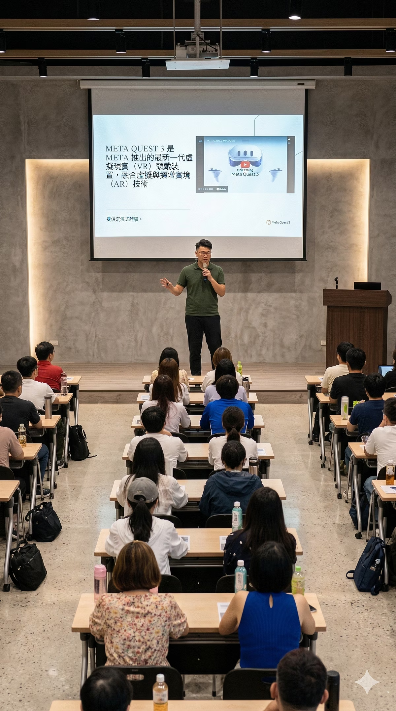
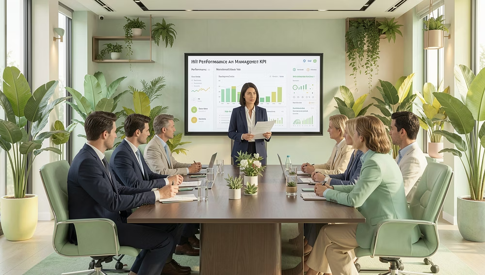
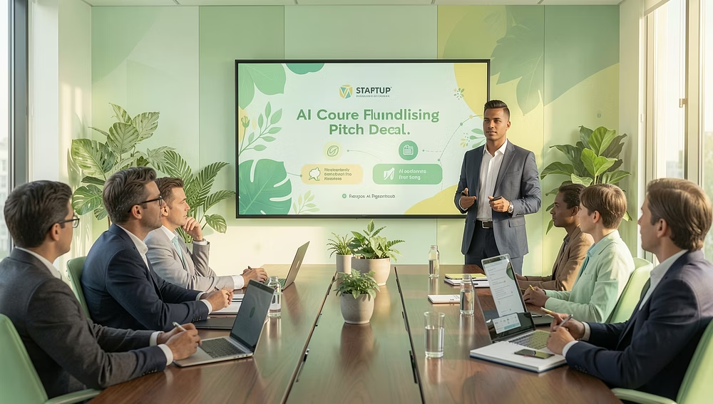
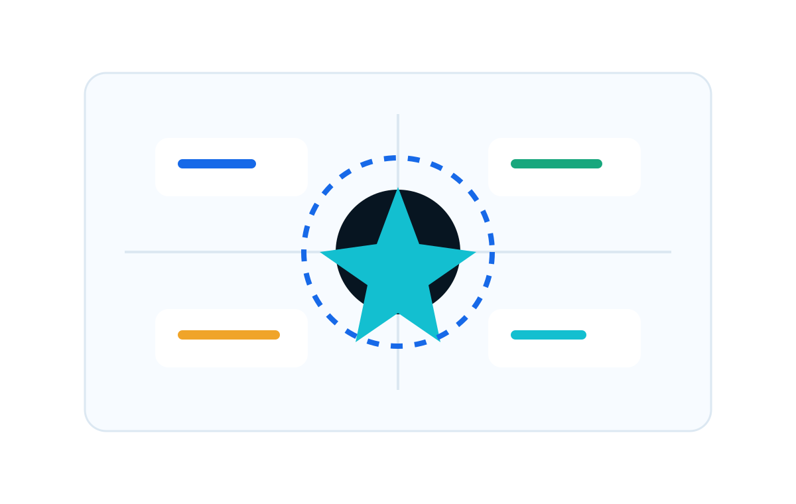
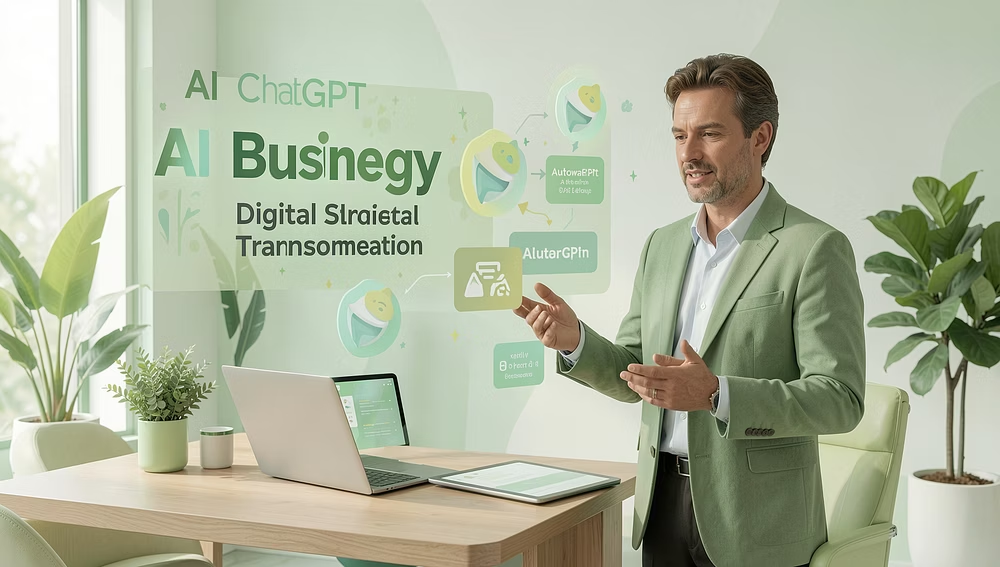
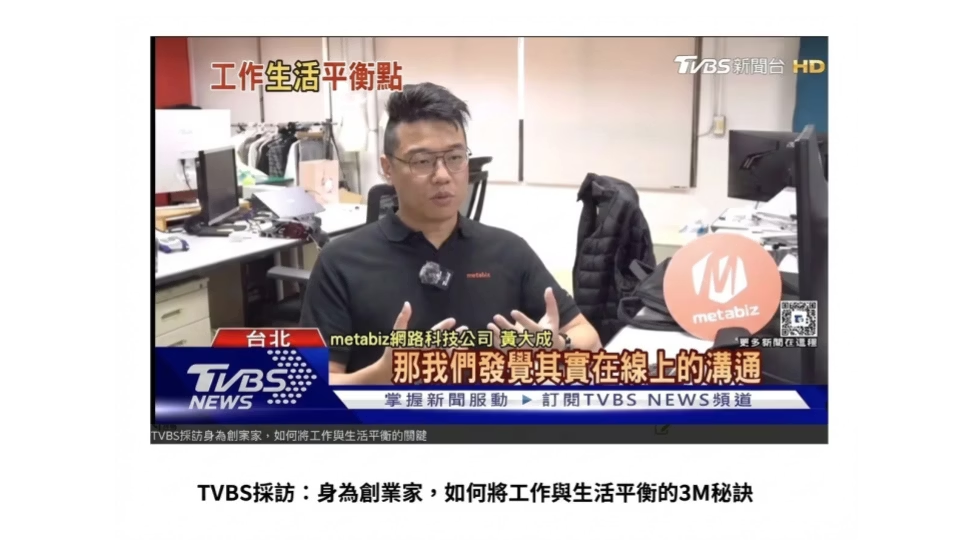

About Me
我不是從 AI 開始，而是從生意、銷售、團隊與一次次實戰開始
我是 Blake Huang 黃大成，Tmarsbase 創辦人，擁有 15+ 年商業實戰經驗，橫跨新創、企業管理、AI 應用與教育推廣。從早期擺攤、銷售管理、連續創業，到 metabiz 與 Tmarsbase，我的核心一直是把抽象想法變成可以執行的成果。

Current Roles
現任角色：把商業實務、AI 教育與政策顧問連在一起
我目前跨足創業、營運、數位轉型顧問與 AI 教育講師，正在形成一個從策略到落地都能接住的個人品牌。
實戰數據
關於我的商業、團隊與 AI 落地輪廓
以下資訊整理自補充資料與既有公開資料，用來讓你快速理解我的經驗基底：我不是只談 AI，而是從商業現場、團隊管理、數位轉型與教育推廣一路累積而來。

Personal Operating System
AI
Biz
Team
我的方法：先看見問題，再建立流程，最後交付結果
我擅長把 AI Agents、大型語言模型、Vibe Coding、ChatGPT / Gemini / NotebookLM、CRM、商業模式創新與銷售管理放在同一張地圖上，協助個人或企業從「知道」走到「做到」。
生成式 AI 應用
AI Agents、工作流程自動化、企業導入與課程設計。商業與營運
會員經營、數據中台、OMO、新零售、Pitch Deck 與數位轉型。銷售與團隊
百人團隊管理、業績節奏、人才培育與高壓執行。
Journey
一條從商業現場走向 AI 教育的路

早期到 2014
從生意現場與創業開始
國中接觸擺攤，18 歲開工作室，後續投入 The Fifth Avenue、Zcard、Keeptouchme 等創業實驗，累積市場、產品與客戶理解。

2015-2021
在教育科技建立銷售與管理肌肉
於 TutorABC／T牌 經歷銷售管理與團隊擴張，曾帶領百人級組織，建立對高壓業績、主管培育與成交節奏的實戰理解。

2022-至今
metabiz 與 AI 新零售
作為 metabiz 共同創辦人暨營運長，參與品牌、營運、資料中台、會員經營與新零售相關實戰，將技術與商業落地連在一起。

2026-未來
推廣 AI 教育與個人成長系統
以 Tmarsbase、企業內訓、演講與系列課程為載體，推動 AI 應用普及，讓更多人能建立自己的 AI 工作流。
Values
我的工作價值觀
這些價值觀不是口號，而是我面對團隊、客戶、學員與自己的行動準則。
願將所學分享於眾
直接溝通
數據檢視
目標設定
自我成長
精進卓越
創造合作機會
快速修正
執行到底